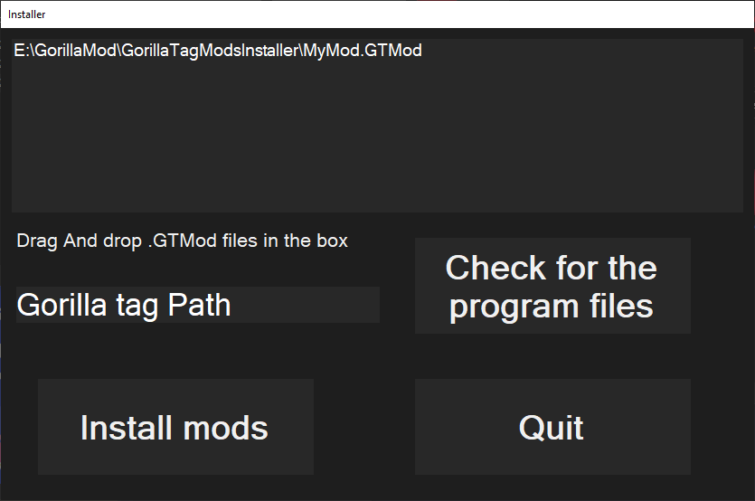

Documentation
Converting Mods

So you might be wondering what is a .GTMod File.
And how to make them.
So basicly a .GTMod file is a zip folder with the mod dll/folder.
For more help contact me on discord That guy#7934.